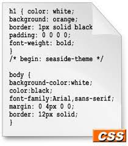
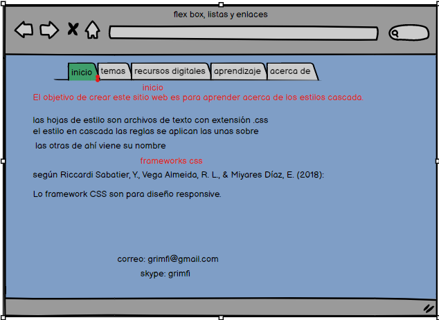

las hojas de estilo son archivos de texto con extensión .css
el estilo en cascada las reglas se aplican las unas sobre las otras de ahí viene su nombre
frameworks css
según Riccardi Sabatier, Y., Vega Almeida, R. L., & Miyares Díaz, E. (2018):
Lo framework CSS son para diseño responsive, entre los más conocidos se encuentran Bootstrap,
Foundation, Semantic, Pure CSS, Ulkit, Skeleton, entre otros.
Si se necesita un framework compatible con la mayoría de los navegadores y que además incorpore
reglas para prácticamentetodos los estilos se puede seleccionar Bootstrap,
incluido en Symfony;el cual constituye un conjunto de herramientas de código abierto.
mi mockups
bibliografía
Riccardi Sabatier, Y., Vega Almeida, R. L., & Miyares Díaz, E. (2018). Aplicación del Responsive Web Design en la creación e implementación del sitio Web del Centro de Histoterapia Placentaria. Revista Cubana de Informática Médica, 10(1), 16-27.
Recio García, J. A. (2016). HTML5, CSS3 y JQuery: curso práctico. RA-MA Editorial.